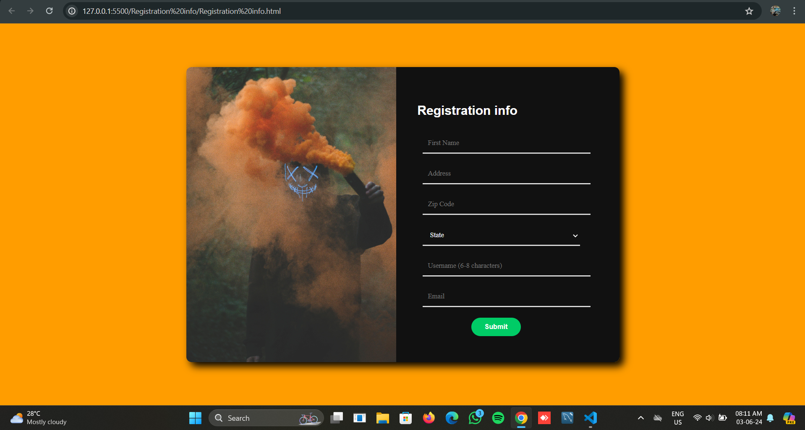
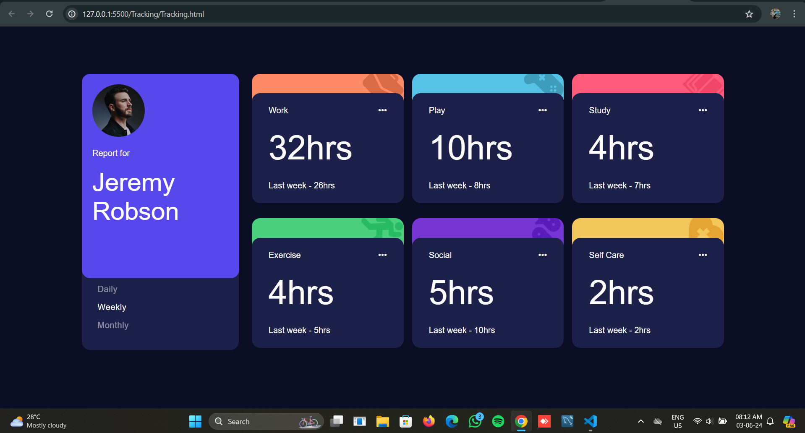
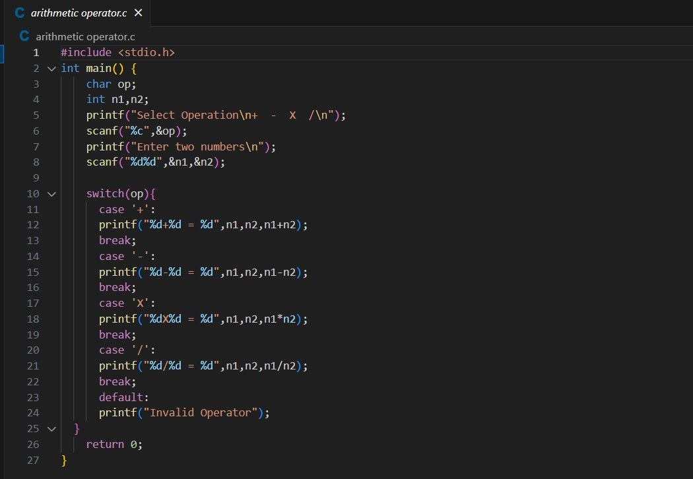
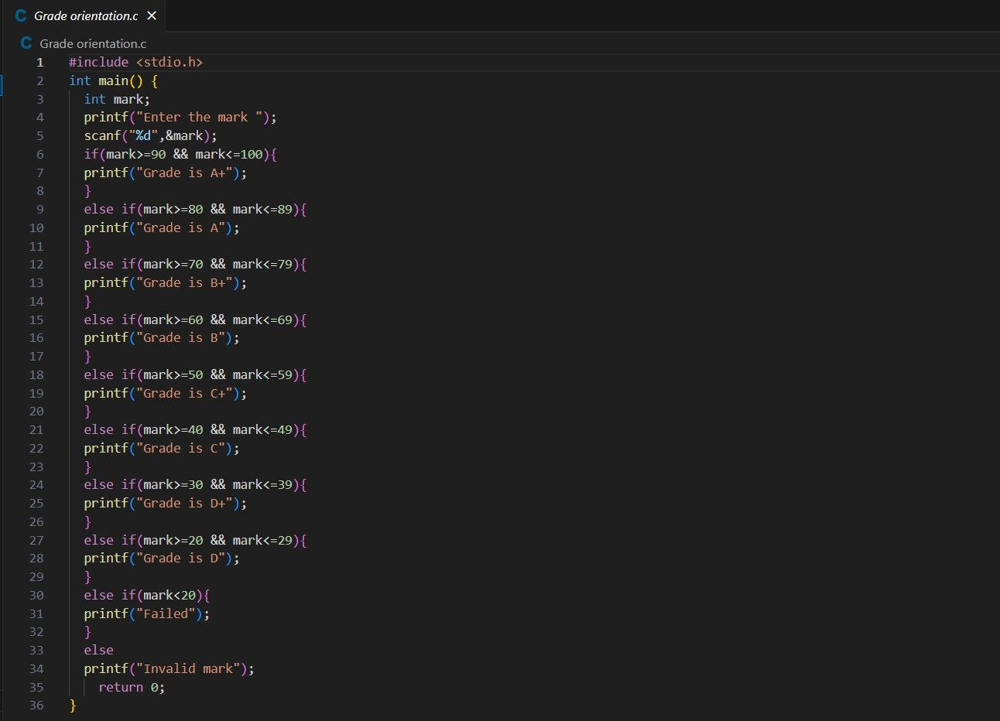

My Works
HTML & CSS


C Programming


MERN Stack Intern
I'm currently on an exciting journey towards establishing myself in the field of web development, with a strong focus on mastering the MERN stack – MongoDB, Express.js, React.js, and Node.js. As a passionate learner in the realm of technology, I'm deeply fascinated by the endless possibilities that MERN stack offers in creating robust and dynamic web applications. Through self-directed study, online courses, and hands-on projects, I'm actively honing my skills in each component of the stack, with a keen eye on best practices and emerging trends in the industry. I'm particularly drawn to the collaborative nature of web development and the opportunity it presents to work alongside talented individuals who share a passion for innovation and creativity. I'm eager to contribute my unique perspective and skills to projects that not only challenge me but also have a positive impact on the lives of others. As I continue to pursue opportunities to expand my knowledge and gain practical experience in web development, I'm open to internships, freelance projects, and entry-level positions that will allow me to further develop my skills and contribute to meaningful projects. Outside of my technical pursuits, I'm an avid learner, a team player, and a problem-solver at heart. I thrive in environments that foster collaboration, creativity, and continuous growth, and I'm committed to making a positive difference wherever I go.